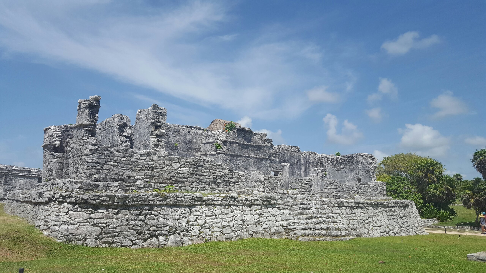
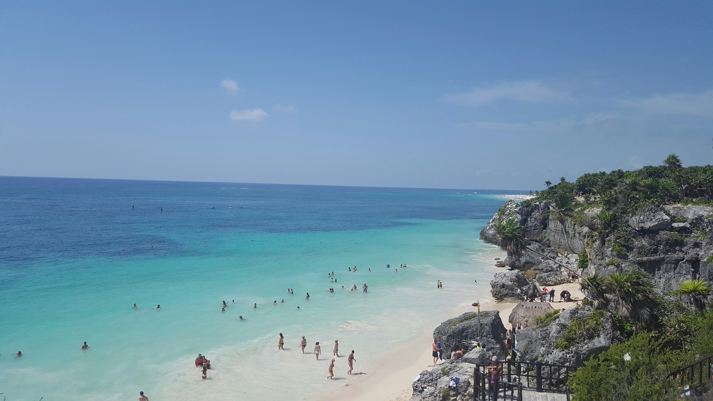
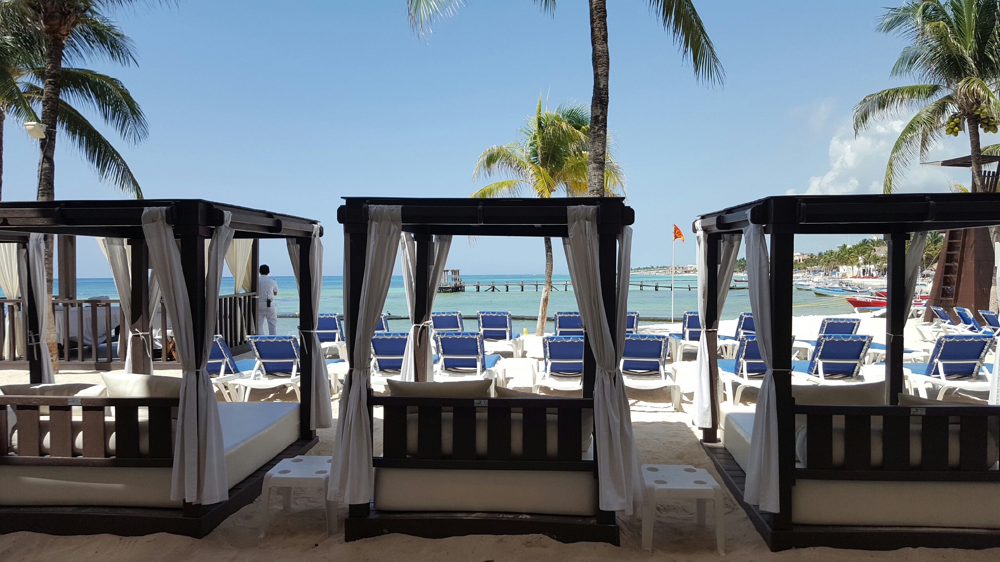
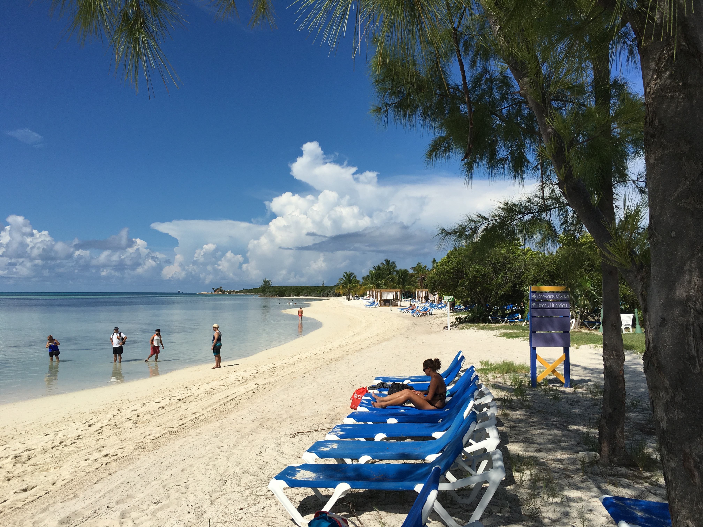

Mexico!
No matter where you go in Mexico you will be sure to find delicious food and gorgeous scenery! Mexico is bursting with life and should be explored by all! There is so much to do and explore! Immerse yourself in the beautiful natural environment exploring Cenotes and the beautiful landscapes. If hiking and grand adventures aren't your style do not worry you can relax on the beaach and take in the sun rays. There are plenty of things to discover and enjoy on the beaches of Mexico. I enjoyed the waters of Tulum and Playa del Carmen. I took day trips to the temples and hiked along the beatuful landscapes. After all the adventure, make time for the delicious food, music, and shopping.
This Maya site is home to the Temple of the God of Wind it is absolutely magnificent! The temple sits a top of a cliff overlooking the Tulum beaches. The entire experience was beautiful! It was an amazing hike up to the temple where we learned more about the Temple's history and to finally see the majesty of it was unbelievable! The temple was amazing to behold and after all the hike back down we got to enjoy the crisp waters of the carribbean sea. On your next trip to Mexico make sure to visit one of the unforgettable Temples.
 Most of my days were spent doing my favorite thing relaxing and lounging at the beach! I would spend the whole day absorbing all the beautiful views around me and eating all the delcious food I could!
 